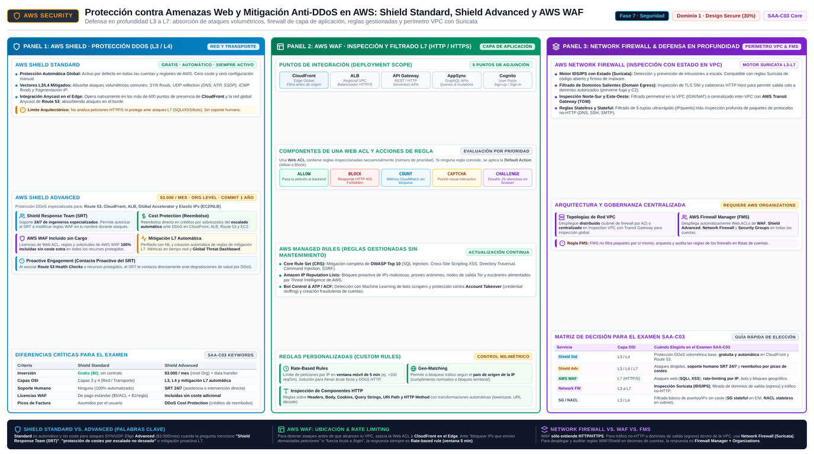

WAF, Shield y Firewall Manager AWS WAF, AWS Shield, AWS Network Firewall, AWS Firewall Manager
La defensa perimetral de AWS se organiza por capas: L3/L4 con Network Firewall y Shield, L7 con WAF, y gestión centralizada multi-cuenta con Firewall Manager.
La seguridad perimetral funciona como la seguridad de un aeropuerto: capas consecutivas, cada una filtrando lo que la anterior no pudo. En el perímetro global, AWS Shield absorbe ataques volumétricos DDoS antes de que lleguen a ti; en la capa de aplicación, AWS WAF inspecciona cada petición HTTP en busca de SQL injection, cross-site scripting o un bot golpeando tu login; dentro de la red, AWS Network Firewall filtra el tráfico L3/L4 que cruza el borde de la VPC; y AWS Firewall Manager administra las reglas de todos estos servicios desde una sola cuenta cuando tienes decenas de ellas.
El examen suele preguntarlo como un matching: dado un ataque o un requisito, ¿qué capa lo resuelve? La regla de oro es distinguir layer (¿L7 HTTP o L3/L4 paquetes?), scope (¿una aplicación o toda la VPC?) y administración (¿una cuenta o toda la organización?). Fíjate además en qué es gratis y automático (Shield Standard) y qué es de pago con soporte humano (Shield Advanced): esa distinción paga preguntas enteras.

AWS WAF: firewall de capa 7 para HTTP
AWS WAF protege aplicaciones web contra exploits de capa de aplicación. Su unidad de trabajo es la web ACL (web access control list), que adjuntas a recursos como distribuciones CloudFront, ALB, API Gateway o AppSync. Dentro de la web ACL combinas reglas propias con managed rule groups mantenidos por AWS — el Core Rule Set cubre SQL injection y XSS genéricos, y hay grupos de reputación IP y de control de bots — y decides la acción por regla: Allow, Block, Count, CAPTCHA o Challenge. Un detalle de arquitectura que cae en el examen: si la app es global, desplegar la web ACL sobre CloudFront filtra el tráfico malicioso en el edge, antes de que cruce hacia tu infraestructura regional.
Dos tipos de regla concentran las preguntas. Las de match statement examinan el contenido de la petición (SQLi, XSS, patrones en headers, URI o body, IP sets y geo-match). Las rate-based rules cuentan las peticiones procedentes de una misma IP en una ventana de cinco minutos y aplican la acción cuando se supera el umbral que definas: la respuesta ante "brute force login attempts" o "a single client flooding the endpoint". El resto de la lógica — prioridad de reglas, métricas y sampling de requests en CloudWatch — es la operación cotidiana de la web ACL.
| Bloque de WAF | Qué hace | Señal en el enunciado |
|---|---|---|
| Web ACL | Contenedor de reglas que se adjunta a CloudFront, ALB, API Gateway… | "protect my application at the edge" |
| Managed rule group | Reglas mantenidas por AWS (Core Rule Set, bot control, IP reputation) | "common web exploits with no maintenance" |
| Rate-based rule | Límite de requests por IP en ventana de 5 minutos | "block IPs sending too many requests" |
| SQLi / XSS match | Detecta patrones de inyección SQL y cross-site scripting | "SQL injection", "XSS attack" |
| IP set / geo-match | Permite o bloquea por listas de IPs o por país de origen | "block traffic from certain countries" |
Shield Standard vs Shield Advanced: el DDoS en dos velocidades
AWS Shield Standard está activado en todas las cuentas sin coste: protege automáticamente contra los DDoS más comunes de capas 3 y 4 (inundaciones SYN, ataques de reflexión) cuando usas CloudFront y Route 53, que ya filtran en el edge. Para la mayoría de aplicaciones es suficiente y es la respuesta cuando el enunciado pide protección DDoS "sin coste ni configuración". AWS Shield Advanced es el producto de pago orientado a ataques sofisticados o de gran escala sobre CloudFront, Route 53, ELB/ALB, Global Accelerator o Elastic IPs: añade detección y mitigación avanzadas, visibilidad de ataques, protección del coste de escalado generado por un DDoS y — la frase mágica del examen — acceso al Shield Response Team (SRT), que te asiste en la mitigación y puede aplicar mitigaciones por ti.
| Aspecto | Shield Standard | Shield Advanced |
|---|---|---|
| Precio | Gratuito, incluido en todos | Suscripción de pago + coste por recurso protegido |
| Activación | Automática, sin configurar | Contratación y recursos explícitos |
| Cobertura | DDoS comunes L3/L4 | DDoS sofisticados y volumétricos + integración con WAF |
| Soporte humano | No | Shield Response Team y soporte proactivo |
| Extras | — | Protección de costes de mitigación, visibilidad y alertas de ataque |
Network Firewall: el perímetro L3/L4 de la VPC
WAF solo ve HTTP; para el resto del tráfico que entra y sale de la VPC existe AWS Network Firewall: un firewall gestionado, stateful y stateless, con capacidades de detección e intrusión que se despliega en el borde de la VPC y filtra el tráfico hacia y desde el internet gateway, el NAT gateway, VPN o Direct Connect. Su motor de inspección con estado se basa en Suricata y acepta reglas compatibles con Suricata, además de reglas gestionadas y domain filtering. Es la respuesta cuando el enunciado pide inspección profunda de paquetes, filtrado por dominio o "east-west" entre VPCs conectadas por Transit Gateway — algo que ni WAF ni security groups cubren. La contrapartida frente a SG/NACL es el coste por endpoint y por GB procesado: no lo elijas para filtrar simple tráfico entre subnets.
Firewall Manager: reglas coherentes en toda la organización
Con una cuenta basta la consola; con cincuenta, la gestión manual de web ACLs es imposible. AWS Firewall Manager (FMS) administra de forma centralizada políticas de WAF, protecciones de Shield Advanced, reglas de Network Firewall, reglas de security groups y listas de AWS Network Firewall, aplicándolas automáticamente a recursos nuevos y cuentas nuevas de la organización. Requiere AWS Organizations y una cuenta administradora delegada. La frase de examen que lo delata: "centrally manage WAF rules across all accounts in my organization" o "automatically apply protections to new resources and accounts". Sin Organizations no hay FMS.
| Servicio | Capa | Scope | Cuándo elegirlo |
|---|---|---|---|
| AWS WAF | 7 | Recurso concreto: CloudFront, ALB, API Gateway | SQLi, XSS, bots, rate limiting en HTTP |
| Shield Standard | 3/4 | Edge global, gratis y automático | DDoS comunes sin coste |
| Shield Advanced | 3/4/7 | Recursos críticos contratados | DDoS avanzado, SRT, protección de costes |
| Network Firewall | 3/4 | El perímetro de la VPC | Inspección Suricata, filtrado por dominio, toda la VPC |
| Firewall Manager | — | Toda la organización | Gestión centralizada y automática de los anteriores |
protección"] --> Q1{"Ataques web
L7 tipo SQLi"} Q1 -->|"sí"| WAF["AWS WAF
web ACL"] Q1 -->|"no"| Q2{"DDoS avanzado
y soporte experto"} Q2 -->|"sí"| SHD["Shield Advanced"] Q2 -->|"no"| Q3{"Filtrar tráfico
de toda la VPC"} Q3 -->|"sí"| NFW["Network Firewall"] Q3 -->|"no"| Q4{"Reglas en muchas
cuentas y recursos"} Q4 -->|"sí"| FMS["Firewall Manager"] Q4 -->|"no"| SGS["Security groups
y NACLs"] classDef navy fill:#EFF6FF,stroke:#3B82F6,stroke-width:2px,color:#1E293B classDef green fill:#F0FDF4,stroke:#10B981,stroke-width:2px,color:#1E293B classDef amber fill:#FFF7ED,stroke:#F59E0B,stroke-width:2px,color:#1E293B class IN navy class Q1,Q2,Q3,Q4 green class WAF,SHD,NFW,FMS,SGS amber
- WAF = capa 7: web ACLs en CloudFront, ALB y API Gateway; SQLi/XSS, bots y rate-based rules (5 minutos por IP).
- Desplegar WAF en CloudFront filtra en el edge, antes de tu infraestructura regional.
- Shield Standard: gratis y automático para DDoS comunes L3/L4; Advanced: pago, SRT, mitigación avanzada y protección de costes.
- Network Firewall: L3/L4 gestionado y stateful (Suricata) en el borde de la VPC — IGW, NAT, VPN y Direct Connect.
- Firewall Manager centraliza WAF, Shield, Network Firewall y security groups; exige Organizations.
- Elige la capa según el ataque: L7 → WAF; volumen → Shield; paquetes → Network Firewall o NACLs/SG.
- SEC-11 AWS WAF — What is (L7 protection, rules, rate limiting) · docs.aws.amazon.com/waf/latest/developerguide/what-is-aws-waf.html
- SEC-12 AWS Shield — Overview (Standard vs Advanced, DDoS) · docs.aws.amazon.com/waf/latest/developerguide/shield-overview.html
- SEC-13 AWS Firewall Manager — What is (centralized WAF mgmt) · docs.aws.amazon.com/fms/latest/developerguide/what-is-fms.html
- SEC-14 AWS Network Firewall — What is (VPC-level L3/L4) · docs.aws.amazon.com/network-firewall/latest/developerguide/what-is-aws-network-firewall.html